In this chapter we will create a simple Construct 2 game for testing AdMob ads. Our game consists of only two buttons, with the labels ‘Show Banner Ad’ and ‘Show Interstitial Ad’. Click on File/New then select the template ‘New empty SD portrait 16:9 project as shown in Fig 1-1 below.
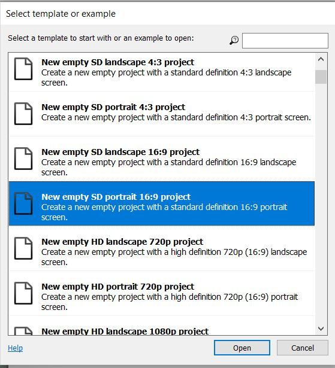
You will note that this project’s window size has width: 480 pixels and height: 854 pixels. Take a look at Fig 1-2 below.
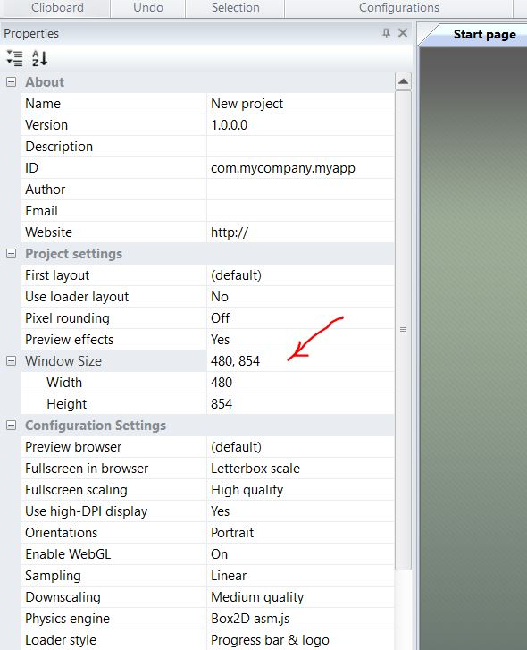
However, the layout at the moment has a width of 960 pixels and a height of 1708 pixels. See Fig 1-3 below.
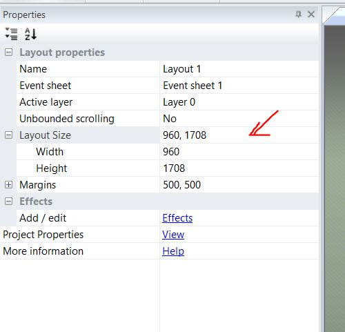
It appears that the layout is much bigger than the window size. For our simple game, we need the layout to be the same size as the windows size. So go ahead and change the layout width to 480 pixels and the height to 854 pixels. Your layout should now look like what is shown in Fig 1-4 below.
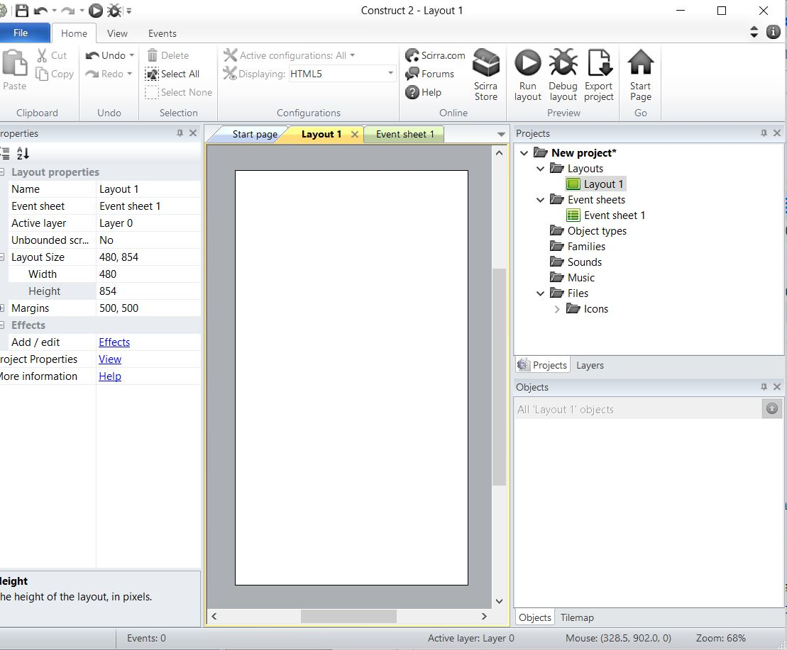
Layout now matches the windows size. Windows size is what you actually see on the screen of your mobile device. Then insert a new sprite as shown in Fig 1-5 below. Call the sprite ‘btnShowBannerAd’
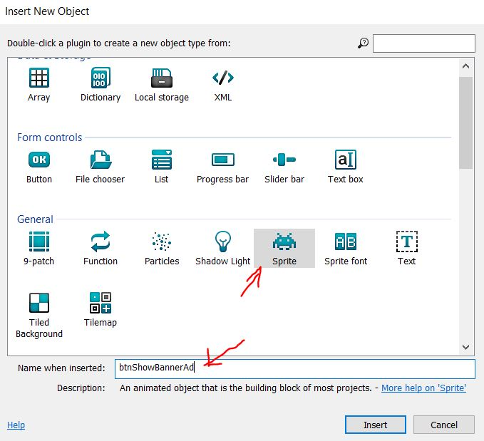
Set the size and color based on Fig 1-6 below. The size is 200 x 80 pixels. Use any color you like. In this example, I am using a light brownish color.
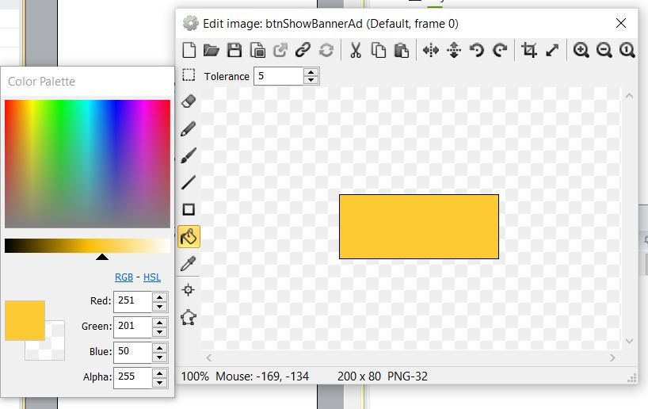
Fig 1-7 below shows what the layout looks like at this stage.
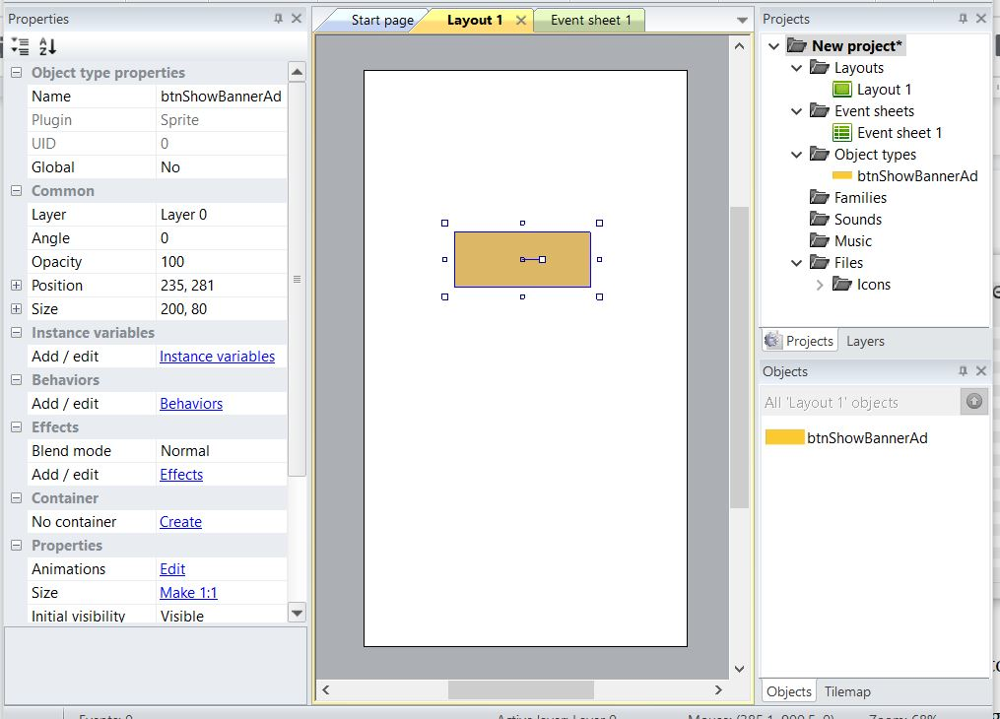
As shown in Fig 1-7 above, I placed the button somewhere in the top-half of the layout. Next, we will put a label on the button. Go ahead and insert a Text object as shown in Fig 1-8 below.
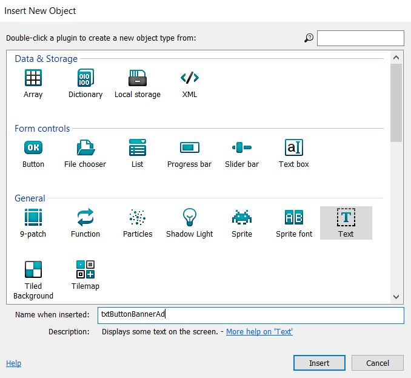
Set the Name when inserted, to ‘txtButtonBannerAd’. Adjust the position and place it right on top of the button which we added earlier. Right now, your layout should look something like Fig 1-9 below.
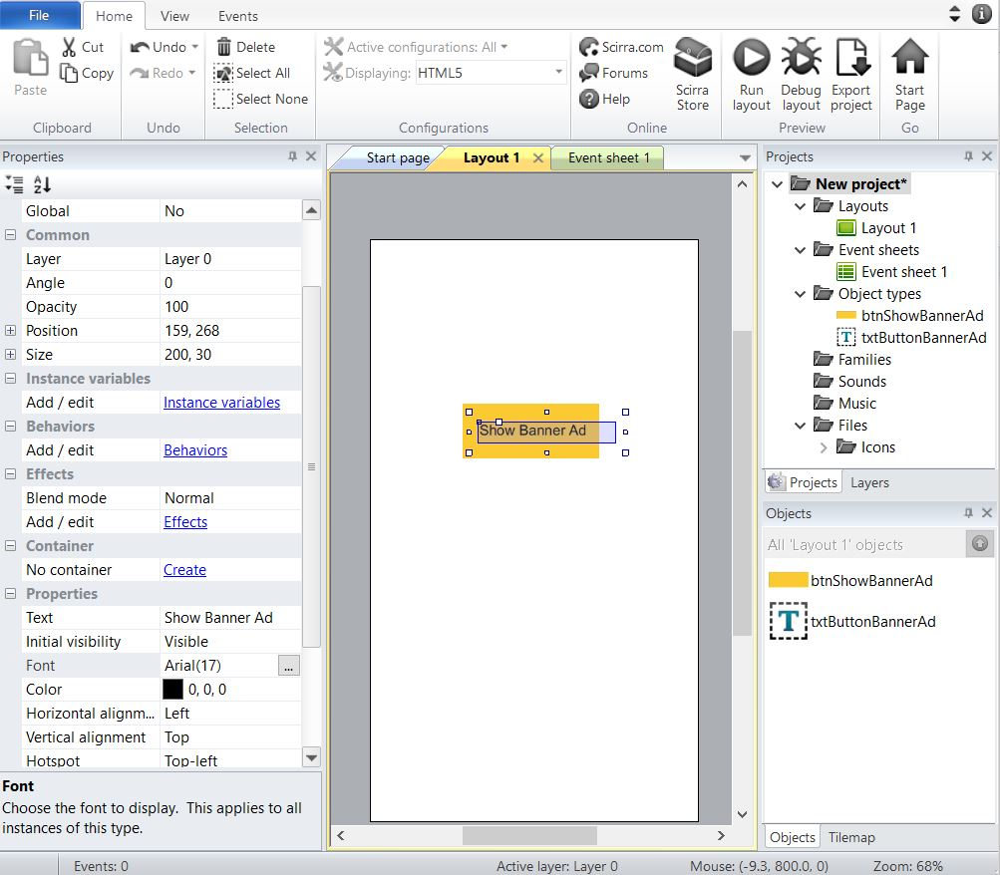
Note that I have also set the display text to ‘Show Banner Ad’ and also increased the font size to 17. Next, we will create another button with the label ‘Show Interstitial Ad’. A simple way to do this is to clone the existing button. So, go ahead and right-click on the button and select ‘Clone object type’ as shown in Fig 1-10 below.
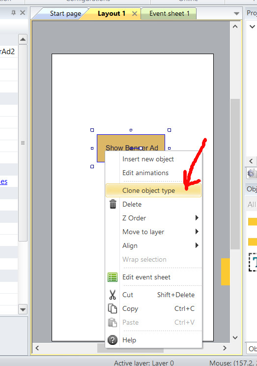
After cloning the button, place it somewhere at the bottom- half of the screen as shown in Fig 1-11 below.
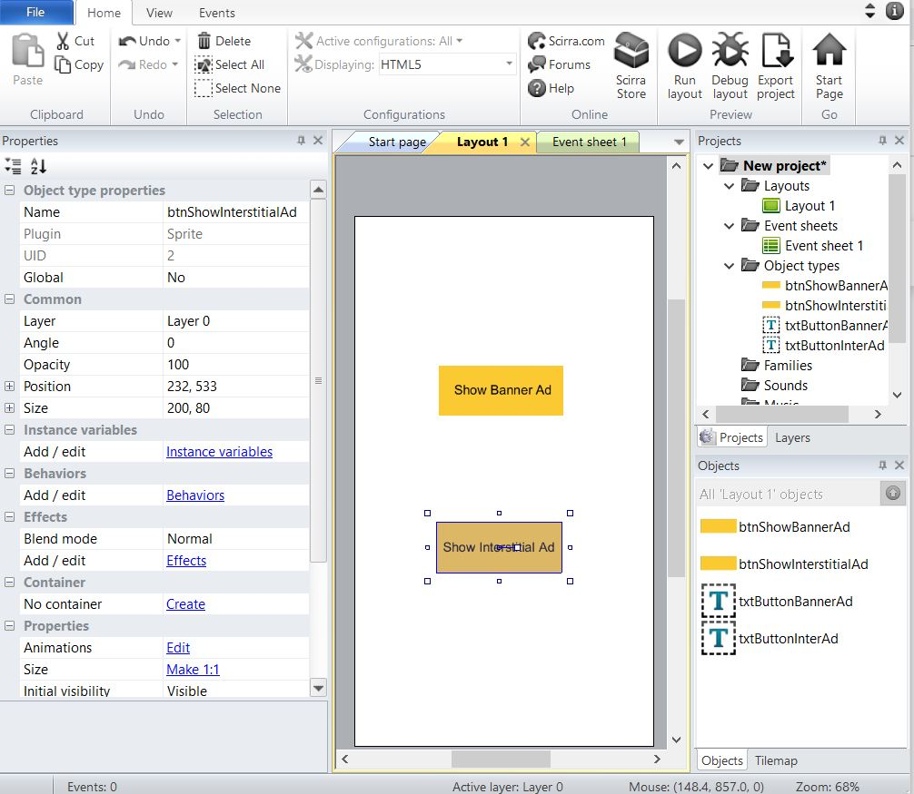
As shown in Fig 1-11 above, after cloning the button, I have renamed it to ‘btnShowInterstitialAd’. Please also clone the Text object and change its display text to ‘Show Interstitial Ad’. At this point, your layout should look Fig 1-11 above. This concludes this chapter. In the next chapter, we will add event handlers for the buttons.